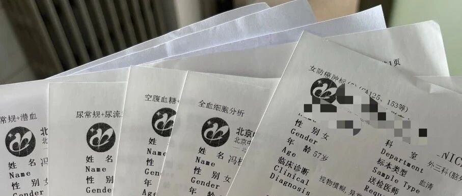

提前退休，感受到了生活的重创
点击关注 秋秋在分享
一起实现财务自由退休
大家好，我是秋秋呀。
最近都在北京，除了日常陪家人看病检查等报告，也会出去玩玩吃吃饭。


1.让老人听医嘱，太难了
2.大多数人把老去想的很简单
3.一个人看病，很不容易
我是带我爸妈做了全身体检，花了2000多。
按道理，钱也花了，有问题咱就听医生的。
那不行，我爸有点糖尿病，医生不让吃面条包子粥这种。
他说，不吃这些，就没有能吃的了！
我说玉米土豆红薯，都可以当主食。
他说吃这些像没吃饭一样……
太难了。
我妈也一样，医生说多运动、她说没时间，说少吃油腻她说饭菜不香了。
他们对疾病的态度像是现在不疼不痒等于没问题。

还经常会说，老了大不了就死了，不用为我费心这种话。
当然年轻人有的也会说，现在快乐，老了死了也没事！
我想，大多数人把老去想的太简单了。
他们总觉得，老去从健康到不健康，是一瞬间的事，甚至死亡睡一觉就无痛离开的。
想的太幸运了！
我最近跑医院，加上提前退休前就是个悲观主义者，是觉得人生实苦。
我感觉:
老去是渐渐地失去，是你慢慢的生病、痛苦，直到死亡的。
这种疾病缠身，对生活无能为力，慢慢的没法吃好吃的、没体力旅游、没法看清东西，甚至最后神智不清，才是老去的常态。
那些说不用看病，60岁70岁就死了，哪有那么幸运。
糖尿病每天去打胰岛素
中风走路都不行
偏瘫下不了地
大不了去死的，是能接受嘎一声死掉，能接受慢慢的死掉吗？
是一开始发现癌症初期就去死？还是糖尿病了就决定死呢？
死亡都是让你慢慢的开始，人也是慢慢老去的。
新冠那种吞刀片胸闷成为日常，才是大多数人老去的情况。
那我理解有面对死亡勇气的人，反而不是嘎一声死掉，就说自己不怕死的。
是活着的勇气！
即使慢性病了，癌症初期了，咱们也能好好调理，积极面对生活。
这次看病我还遇到好几个高龄老人，独自看病摸不清科室和各种规则的。
我一方面会想，我要经常更新自己跟上时代，不像现在的父母不爱学坐地铁不学移动支付，等我老了有新技术要去学。
一方面又想，我真的到70多了，能跟上时代吗？如果没有子女，谁又能真的关心我呢？
我不鼓励生孩子，也不鼓励不生孩子，只想说各有利弊。
没孩子，要接受有可能的孤单和无人的牵绊。
有孩子，就接受前期的时间金钱投入。
最后，来北京看病挺辛苦，和最初旅居的闲暇的生活略有不同。
我也不觉得节奏被打乱，反而都在我人生的地图里。
引用一段话：
因为稳定不是一种状态，而是一种能力。
不是大厂稳定、教师编制稳定、找个男人组建家庭稳定，这种潜入某个环境而获得的稳定是假稳定，是束缚是捆绑是僵化而失去活力自由。
稳定是你可以在生活的风浪中，总能找到内心的中轴再次平衡。
生活就是这样，每天都会发生意外把你原有的平静生活打破，你要有稳定的能力，可以在震荡中稳住而没有崩溃，可以再摔倒之后再站稳继续出发。
我觉得我有稳定的能力，知道自己要啥、知道人生重要的是啥、也有喜欢做的事。
所以生活的一切，都轻轻拂过我，是带给我阅历。
希望大家也一样：
热爱生活，敬畏生命，让万事万物轻轻拂过我们，最终不亏来人间这一程的体验。